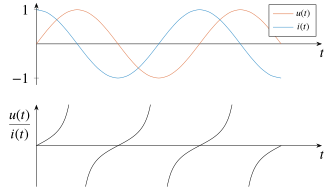
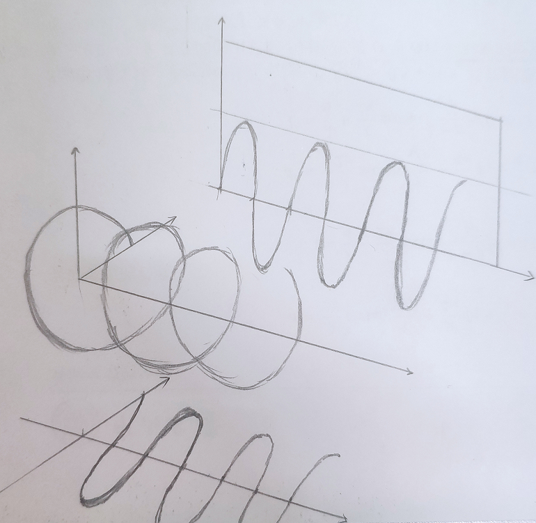
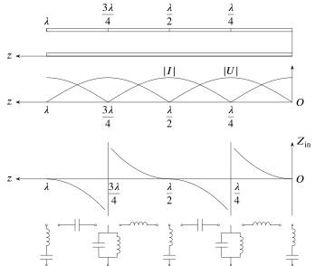

在学习《随机信号分析与处理》的时候曾写过一篇 Are Imaginary Numbers Really Real? 而今学《微波技术与天线》,谁知又和复数杠上了……
问题
对于平行无耗传输线的纯驻波状态,终端负载短路时,终端反射系数 \(\Gamma_l=-1\),驻波系数\(\rho\rightarrow\infty\),此时,传输线上任意一点 \(z\) 处的反射系数 \(\Gamma(z)=-e^{-\mathrm{j}2\beta z}\) ,代入 \[ \left\{\begin{aligned} U(z)&=U_{+}(z)+U_{-}(z)=A_{1} \mathrm{e}^{j \beta z}[1+\Gamma(z)]\,, \\ I(z)&=I_{+}(z)+I_{-}(z)=\frac{A_{1}}{Z_{0}} \mathrm{e}^{j \beta z}[1-\Gamma(z)]\,, \end{aligned}\right. \] 整理得 \[ \left\{\begin{aligned} U(z)&=\mathrm{j} 2 A_{1} \sin \beta z \,,\\ I(z)&=\frac{2 A_{1}}{Z_{0}} \cos \beta z\,. \end{aligned}\right.\tag{1} \] 设 \(A_1=|A_1|e^{j\phi_0}\) ,考虑时间因子 \(e^{j\omega t}\) ,则传输线上的电压、电流瞬时表达式为 \[ \left\{\begin{aligned} u(z, t)&=2\left|A_{1}\right| \cos \left(\omega t+\phi_{0}+\frac{\pi}{2}\right) \sin \beta z \,,\\ i(z, t)&=\frac{2\left|A_{1}\right|}{Z_{0}} \cos \left(\omega t+\phi_{0}\right) \cos \beta z \,. \end{aligned}\right.\tag{2} \] 现在我们来计算输入阻抗,根据式 \((1)\) 有 \[ Z_{\mathrm{in}}(z)=\frac{U(z)}{I(z)}=\frac{\mathrm{j} 2 A_{1} \sin \beta z}{\frac{2 A_{1}}{Z_{0}} \cos \beta z}=\mathrm{j}Z_0\tan\beta z\,;\tag{3} \] 而根据式 \((2)\) 有 \[ Z_{\mathrm{in}}=\frac{u(z,t)}{i(z,t)}=\frac{2\left|A_{1}\right| \cos \left(\omega t+\phi_{0}+\frac{\pi}{2}\right) \sin \beta z }{\frac{2\left|A_{1}\right|}{Z_{0}} \cos \left(\omega t+\phi_{0}\right) \cos \beta z}=-Z_0\tan\left(\omega t+\phi_{0}\right)\tan\beta z\,.\tag{4} \] 对比式 \((3)\) 和 式 \((4)\),问题就在于究竟那个是正确的?根据式 \((3)\),传输线的输入阻抗只与位置 \(z\) 有关系;而式 \((4)\) 不仅与位置 \(z\) 还与时间 \(t\) 有关系,说明传输线上各点的输入阻抗是时变的.我们该怎么解释这个矛盾?
首先说明本文的结论——式 \((3)\) 是正确的,而式 \((4)\) 是有偏颇的.但在解释这个问题之前,我们先看另外一个问题.
"同个"问题
图1 电路图
对于图1的电路,假设电容两端的电压为 \(u(t)=\sin(\omega t)\),则电流 \(i(t)=\omega\cos( \omega t)\),电压与电流的比值如下: \[ \qquad u( \omega t)/i(\omega t)=\tan(\omega t)/\omega\,,\tag{5} \] 为方便分析,可以视 \(\omega=1\;\mathrm{rad/s}\),但为了形式统一,还是显式地写出来.
电容两端的电压 \(u(t)\),电流 \(i(t)\) 和 电压与电流的比值 \(u(t)/i(t)\) 如图2所示.很显然,电容两端的电压与电流比值并不等于电容的阻抗 \(Z_C=1/\mathrm{j}\omega\). 这个矛盾与上一个问题的矛盾是一致的,显然这不是"微波"独有的问题.解释了这个问题,上一个问题的也就迎刃而解.

图2 电压、电流和电压与电流的比值
其实要得到正确的电容阻抗也很简单,我们把电压和电流用相量表示: \[ \dot{U}=e^{\mathrm{j}0}\,,\qquad \dot{I}=\omega e^{\mathrm{j}{\pi}/{4}}\,, \] 则 \[ \dot{U}/\dot{I}=e^{\mathrm{j}0}/\omega e^{\mathrm{j}{\pi}/{4}}=\frac{1}{\mathrm{j}\omega}=Z_C\,.\tag{6} \] 式 \((5)\) 用相量计算得到的是正确的,与用微分方程 \(i(t)=C\frac{\mathrm{d}u(t)}{\mathrm{d}t}\)计算的结果也是吻合的;形式上也同式 \((3)\) 用时谐的形式计算一样.那为什么这样才是正确的呢?
首先我们需要解决下面两个问题:
- 相量与时谐的形式的一致性;
- 复数 \(\mathrm{j}\) 是怎么被引入到电路中的,在电路中的意义是什么.
相量与时谐的形式的一致性
写此节的作用在于说明相量和时谐形式的信号本质上是一致的,才能让式 \((5)\) 的正确性与式 \((3)\) 的正确性无缝衔接.
相量是用于分析正弦电流电路稳定状态的一种工具,如果没有相量电路分析并非就分析不下去了,我们还可以用常微分方程来分析,前者的提出正是为了代替后者,减小电路分析和计算的难度.需要特别说明的是,相量法仅仅针对正弦电路, \(Z_L=\mathrm{j}\omega L\) 和 \(X_C=1/\mathrm{j}\omega C\) 计算也仅适用于正弦稳态电路(因为所有的推导都是基于正弦电路,这也从某种程度上说明了正弦函数的特殊性和在自然界中的本质性);对于非正弦电路,我们需要借助傅里叶级数(变换),相量才适用.
根据欧拉公式,我们可以把一个正弦量分解为一对共轭的复指数函数: \[ \begin{aligned} u_{\mathrm{s}}&=\frac{1}{2}\left[U_{\mathrm{sm}}e^{\mathrm{j}(\omega t+\phi_u)}+U_{\mathrm{sm}}e^{\mathrm{j}(\omega t-\phi_u)} \right]\,,\\ i&=\frac{1}{2}\left[I_{\mathrm{s}}e^{\mathrm{j}(\omega t+\phi_u)}+I_{\mathrm{s}}e^{\mathrm{j}(\omega t-\phi_u)} \right]\,, \end{aligned} \] 根据叠加定理和数学理论,只要对其中一个分量进行分析求解,就能写出全部结果,如只取 \(u_{\mathrm{s}}=U_{\mathrm{sm}}e^{\mathrm{j}(\omega t+\phi_u)}\),只是数学形式上的变换,跟用 \(u_\mathrm{s}=U_{\mathrm{sm}}\cos(\omega t+\phi_u)\) 计算并无实质性的区别,相量便定义为 \(\dot{U}_{\mathrm{s}}=U_\mathrm{s}e^{\mathrm{j}\phi_u}\) (省略了 \(\omega\) 和 \(t\)).
时谐电磁场中,常用复数形式表示电压和电流等物理量.设 \(u(r, t)\) 是 一个以角频率 \(\omega\) 随时间呈时谐变化的标量函数,其瞬时表示式为 \[ u(\boldsymbol{r}, t)=u_{\mathrm{m}}(\boldsymbol{r}) \cos [\omega t+\phi(\boldsymbol{r})]\,,\tag{7} \] 式中 \(u_{\mathrm{m}}(\boldsymbol{r})\) 为振幅,它仅为空间坐标的函数; \(\omega\) 为角频率; \(\phi(\boldsymbol{r})\) 是与时间无关的初相位.利用复数取实部表示方法,可将式 \((6)\) 写成 \[ u(\boldsymbol{r}, t)=\operatorname{Re}\left[u_{\mathrm{m}}(\boldsymbol{r}) \mathrm{e}^{\mathrm{j} \phi(\boldsymbol{r})} \mathrm{e}^{\mathrm{j} \omega t}\right]=\operatorname{Re}\left[\dot{u}(\boldsymbol{r}) \mathrm{e}^{\mathrm{j} \omega t}\right]\,, \] 式中 \[ \dot{u}(\boldsymbol{r})=u_{\mathrm{m}}(\boldsymbol{r}) \mathrm{e}^{\mathrm{j} \phi(\boldsymbol{r})}\,, \] 称为复振幅,或称为 \(u(\boldsymbol{r}, t)\) 的复数或时谐形式.
对比相量与时谐形式,显然本质上他们是一致的.
电路分析中复数的引入
下面我们来看看复数是怎么被引入到电路分析中的.
\(e^{\mathrm{j}\theta}\) 的 几何意义
任意复数 \(A=|A|e^{\mathrm{j}\theta}\) 在复平面上相当于把 \(e^{\mathrm{j}0}\) 也就是向量 \((1,0)\) 的模值伸缩为 \(|A|\), 再逆时针旋转一个角度 \(\theta\). 这一点从欧拉公式上也是显而易见的(更多说明可以参考[4,5]).
电容、电感的数学模型
我们对电感和电容的数学建模如下: \[ u=L \frac{\mathrm{d} i}{\mathrm{d} t}\,, \]
\[ i=C\frac{\mathrm{d}u}{\mathrm{d}t}\,, \]
对于正弦电路,微分正好蕴藏着相移 \(\pi/2\) 这一信息,而 \(\mathrm{j}=1\times e^{\mathrm{j}\pi/2}\) 的物理意义正好代表相移 \(\pi/2\),故一个 \(\mathrm{j}\) 就将微分方程化繁为简.但更重要的是,这个 \(\mathrm{j}\) 揭示了一个我们平常并不关注的一个维度——波的本质上是三维的,其传输如图3所示.利用欧拉公式 \(e^{\mathrm{j}\omega t}=\cos t+\mathrm{j}\sin(t)\),我们一般所指的波只是其实部;或者说我们只是看到了一个投影(或切片).在[3]中,WaveView的回答说:对自然界实际的物理量和信号,都不存在虚数一说;用虚数是为了数学处理方便.首先虚数这个说法是不合适的,这样的说法总是致使我们错认为 \(\mathrm{j}\) 是不存在的,关于复数存不存在之前已经在 Are Imaginary Numbers Really Real? 中讨论过了——复数是"真实存在"的,便不再赘述.引入复数是为了数学处理方便的说法诚然正确,但仅仅只是为了数学分析方便吗?私以为不然,正是复数的引入才让我们看到信号的全貌,而我们为什么要拒绝这种全貌——蜷缩在二维的视角中呢?

图3 三维空间中的波形与投影(等有时间再用Manim做一个动画)
在这里,复数 \(\mathrm{j}\) 的物理意义(之一)可以说是"相位",打双引号是因为这种表征是隐式的,而非显式的(要么通过 \(e\) 复指数表现出来,要么通过实部虚部求反正切表现出来).
回到"同一"问题的讨论上来,将式 \((5)\) 重写如下 \[ \qquad u( \omega t)/i(\omega t)=\tan(\omega t)/\omega\,,\tag{5} \] 这里我们用的是电压和电流在实轴上的投影来算阻抗,由于存在相移,显然已经没有什么意义——相当我们在二维世界中推导三维世界的中的结果,信息(即维度)的缺失导致推导出来的结论存在偏颇.如果硬要对式 \((4)\) 有什么解释的话,大概只能说 \(\tan(\omega t)/\omega\) 是一个等效的电阻;将图2中的电容替换成阻值按照 \(\tan(\omega t)/\omega\) 规律变化的电阻,同样在等效电阻的两端施加 \(u(t)=\sin (t)\) 的电压,我们得到的电压和电流变化规律与电容两端的电压电流变化是一致的.
将式 \((6)\) 重写如下: \[ \dot{U}/\dot{I}=e^{\mathrm{j}0}/\omega e^{\mathrm{j}{\pi}/{4}}=\frac{1}{\mathrm{j}\omega}=Z_C\,,\tag{6} \] 姑且将其运算称为"几何"运算(也就是复数的基本运算),而式 \((4)\) 中的运算称为"算术"运算.算术运算对于纯电阻的情况是成立的,因为电阻不会导致电流或者电压发生相移,即任何时刻电压和电流都是同相的,所以我们也没必要从三维的角度来看待这个问题.算术运算是几何运算的一种特殊情况.
回答问题
根据以上的解释,对于问题中的式 \((3)\) 和式 \((4)\) \[ Z_{\mathrm{in}}(z)=\frac{U(z)}{I(z)}=\frac{\mathrm{j} 2 A_{1} \sin \beta z}{\frac{2 A_{1}}{Z_{0}} \cos \beta z}=\mathrm{j}Z_0\tan\beta z\,,\tag{3} \]
\[ Z_{\mathrm{in}}=\frac{u(z,t)}{i(z,t)}=\frac{2\left|A_{1}\right| \cos \left(\omega t+\phi_{0}+\frac{\pi}{2}\right) \sin \beta z }{\frac{2\left|A_{1}\right|}{Z_{0}} \cos \left(\omega t+\phi_{0}\right) \cos \beta z}=-Z_0\tan\left(\omega t+\phi_{0}\right)\tan\beta z\,,\tag{4} \]
孰是孰非的问题也就不言而喻了.
如果不采用时谐形式计算,我们能够得到正确答案吗?答案是肯定的——借助工具常微分方程. \[ \begin{aligned} C&=i(t)/\frac{\mathrm{d}u(t)}{\mathrm{d}t}\\ &=\left[\frac{2\left|A_{1}\right|}{Z_{0}} \cos \left(\omega t+\phi_{0}\right) \cos \beta z\right]\bigg/\left[-2\omega\left|A_{1}\right| \cos \left(\omega t+\phi_{0}\right) \sin \beta z\right]\\ &=\frac{1}{-\omega Z_0 \tan\beta z}\,, \end{aligned}\tag{8} \] 故 \[ Z_{\mathrm{in}}=\frac{1}{\mathrm{j}\omega C}=-\frac{\omega Z_0 \tan\beta z}{\mathrm{j}\omega}=\mathrm{j}Z_0 \tan\beta z\,, \] 其结果与式 \((3)\) 一致的.式 \((8)\) 的计算针对的是图5中 \(z\in (\frac{\lambda}{4},\frac{\lambda}{2})\) 的等效情况.

图4 终端短路线中的纯驻波状态
对于等效电感呢?其实也是一样的, \[ \begin{aligned} L&=u(t)/\frac{\mathrm{d}i(t)}{\mathrm{d}t}\\ &=\left[2\left|A_{1}\right| \cos \left(\omega t+\phi_{0}+\frac{\pi}{2}\right) \sin \beta z\right]\bigg/\left[ -\frac{2\left|A_{1}\right|\omega}{Z_{0}} \sin \left(\omega t+\phi_{0}\right) \cos \beta z\right]\\ &=\left[-2\left|A_{1}\right| \sin \left(\omega t+\phi_{0}\right) \sin \beta z\right]\bigg/\left[ -\frac{2\left|A_{1}\right|\omega}{Z_{0}} \sin \left(\omega t+\phi_{0}\right) \cos \beta z\right]\\ &=\frac{Z_0\tan\beta z}{\omega}\,, \end{aligned}\tag{9} \] 则 \[ Z_{\mathrm{in}}=\mathrm{j}\omega L=\mathrm{j}\omega\frac{Z_0\tan\beta z}{\omega}=\mathrm{j}Z_0 \tan\beta z\,, \] 结果同样一致.这里 \(Z_{\mathrm{in}}\) 不过是物理意义上的等效"电容"和"电感"而已,数字规律是一样的(符合 \(\mathrm{j}Z_0 \tan\beta z\) 的规律),故怎么算都是一样的.
但是对于一般情况,我们并不先验地知道电阻元件是纯电阻、感性还是容性,也就无法判断是用下面哪个式子来算: \[ u=L \frac{\mathrm{d} i}{\mathrm{d} t}\,,\qquad i=C\frac{\mathrm{d}u}{\mathrm{d}t}\,. \]
但是用相量或时谐形式来运算,我们总能得到正确的答案,而不需要先验地知道元件到底是呈什么性质.这也佐证了复数的引入让电路分析或者信号处理上升到更为本质的层面,而不是仅仅为了数学分析的方便.
后记
写完本文,又想到一个哲学的问题——数学是人类的发明还是发现?个人选择后者.
\(\sin(t)\) 函数与 \(\cos(t)\) 函数相位上相差 \(\pi/2\),而二者的微分结果在相位上亦相差 \(\pi/2\),由此我们引入复数来表征物理量的相位关系;而正弦函数正是傅里叶级数的基底,通过傅里叶级数和傅里叶变换我们又可以将这种分析方法推广到任意信号的分析.这种多米诺骨牌效应般环环相扣的设计,非深邃的宇宙而无人可以孕育.我们所窥见的构建宇宙的数学法则大概也只是冰山一角罢.
I believe that mathematical reality lies outside us, that our function is to discover or observe it, and that the theorems which we prove, and which we describe grandiloquently as our creations, are simply our notes of our observations.
A Mathematician's Apology by G. H. Hardy
参考文献
[1] 微波技术与天线.第四版.刘学观,郭辉萍[M].西安:西安电子科技大学出版社.2016.
[2] 电路.第五版.邱关源,罗先觉[M].北京:高等教育出版社.2006.
[3] 信号中的虚部的物理意义是什么?. 知乎.
[4] 欧拉公式与初等群论. 3B1B. BiliBili.
[5] 微分方程概论-第五章:在3.14分钟内理解\(e^{i\pi}\). 3B1B. BiliBili.
[6] 电磁场与电磁波.第四版.谢处方,饶克谨[M].北京:高等教育出版社.2006.
[7] 绘图工具: \(\mathrm{\LaTeX}\) 宏包 \(\mathrm{PGF}\,\&\, \mathrm{Ti}k\mathrm{z}\) 以及 Manim 动画引擎.